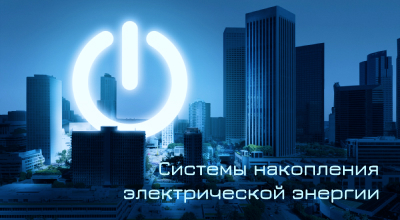
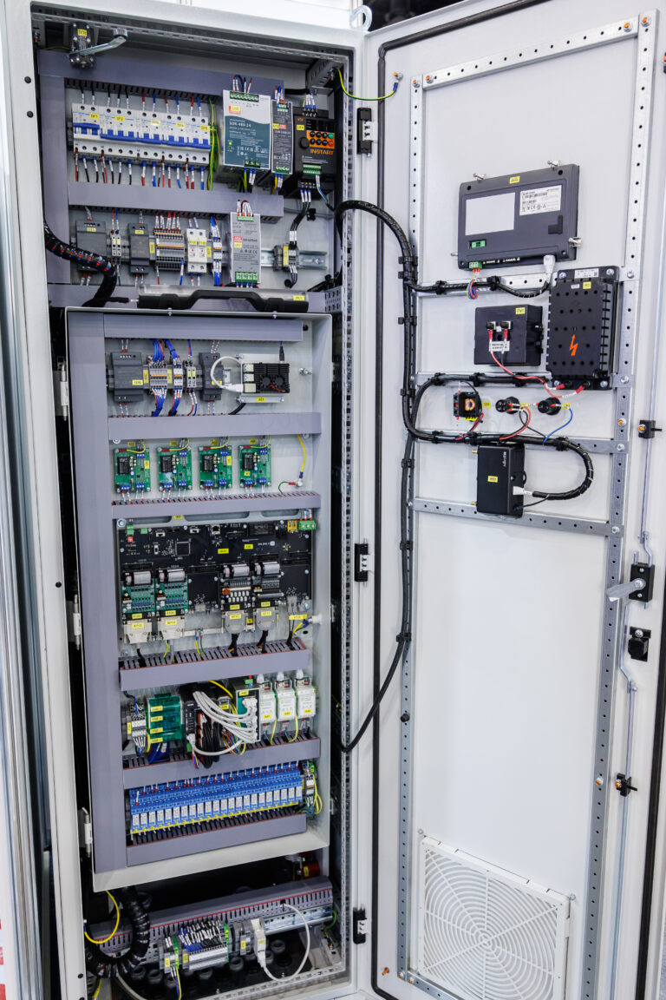

Электрическая энергия является одним из самых востребованных типов продукции. Однако, при её транспортировке от электростанций через распределительную сеть до конечных пользователей, её качество снижается. Это происходит из-за потерь в напряжении в сетях, ассиметричной нагрузки по фазам, что ведёт к неравномерности напряжений, а наличие преобразователей вызывает искажения синусоидальности напряжений. Дополнительно, резкие изменения нагрузки при подключении и отключении потребителей приводят к колебаниям частоты и напряжения, а также могут вызвать аварийные ситуации в сети. Такие факторы, как грозовые перенапряжения и посторонние воздействия на сеть, еще больше отклоняют параметры качества электропитания от стандартных значений, что в свою очередь отрицательно сказывается на функционировании электроприемников.
Система накопления электрической энергии (СНЭЭ) позволяют решать проблемы, связанные с качеством и бесперебойности электроэнергии.
СНЭЭ — разрабатывается с использованием управляемой силовой электроники, включая двунаправленный преобразователь (DC/AC – AC/DC) под управление программируемой логики и постоянного звена DC.
В качестве постоянного звена DC могут выступать модули аккумуляторных батарей (литий-железо-фосфат), суперконденсаторов. Возможно, примененные «Гибридных» модульных систем, в таких системах аккумуляторные батареи используются в качестве основного накопителя энергии, а суперконденсаторы обеспечивают импульсные режимы работы. Помимо этого, суперконденсаторы защищают аккумуляторы от просадок напряжения и высоких токов заряда/разряда.
Выбор модульных систем зависит от поставленных задач СНЭЭ.
Задачи СНЭЭ:
- Выдача или потребление активной мощности;
- Выдача или потребление реактивной мощности;
- Компенсация несимметрии;
- Компенсация несинусоидальности;
- Регулирование напряжения;
- Регулирование коэффициента мощности.
Системы накопления энергии подключаются параллельно сети и нагрузки, обеспечивая гибкое и надежное использование электрической энергии.
Параллельное подключение позволяет системам накопления действовать как буфер, поглощая излишки энергии в периоды низкого потребления и отдавая ее обратно в сеть, когда спрос возрастает.
Энергетические компании и промышленные предприятия все чаще внедряют такие системы для оптимизации управления нагрузками и повышения экономической эффективности. Умные распределительные сети, оснащенные системами управления и наблюдения в реальном времени, способны быстро реагировать на изменения в энергопотреблении, что повышает надежность и устойчивость всей системы.
